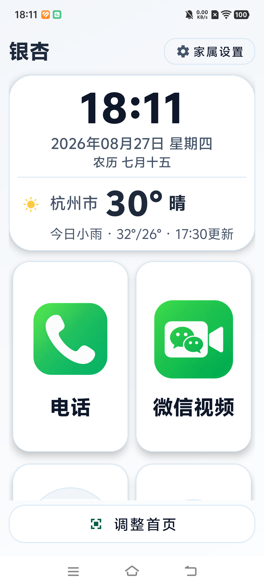
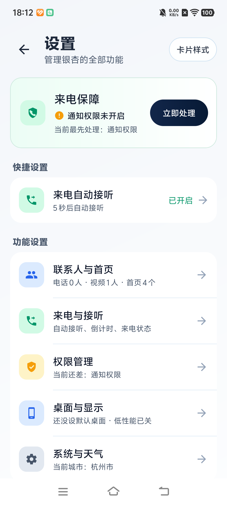
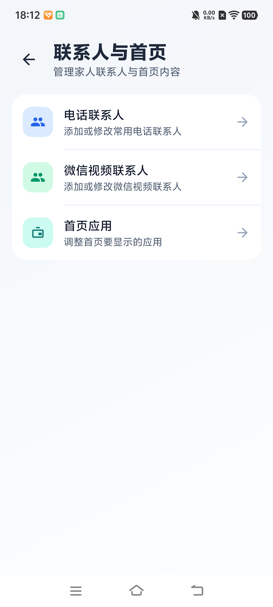
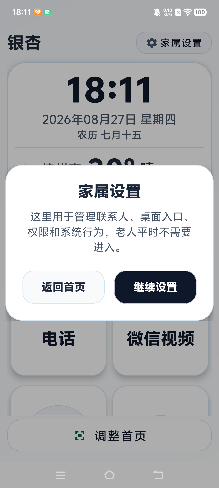

时间、天气、联系人和应用都有清楚层级。
一眼看清大字和大图标留在第一屏
没有负担无账号、无广告，本地优先
只做 AndroidAndroid 7 及以上，个人免费
不是教老人适应手机，
是让手机适应老人。
字太小、入口太深、步骤太多，都会让一次普通操作变得困难。银杏把这些负担拿掉，只留下真正会用到的事情。
电话和微信视频直接放在首页，不再翻找。
重要操作有文字提示，误触风险更低。
真实界面，真实大字。
下面都是银杏在 Android 真机上的实际画面。




老人只管用，
家属负责设置。
联系人、首页应用、自动接听、权限和显示模式都集中在家属设置中。长辈平时不需要进入。
- 联系人提前放好常用家人
- 首页应用只留下真正会打开的应用
- 来电保障按需设置自动接听与提醒
哪些已经能用，
哪些还在验证。
已实现不等于所有 Android 机型都已验证。这里按当前实际进度说明。
桌面、天气、电话联系人、视频联系人、应用管理和家属设置。
微信视频主动拨号已在 vivo V2285A、Android 15、微信 8.0.66 上跑通。
系统电话自动接听已完成软件适配，仍需真实 SIM 与更多厂商 ROM 验证。
微信视频来电自动接听、远程协助、云同步和 iOS。
简单，也应该透明。
银杏无广告、无账号，源码公开可见。个人和非商业用途免费，商业使用需要事先取得付费书面授权。
安装前，
可能想知道。
会替换手机里的系统功能吗？
不会。银杏只是新的 Android 首页，电话、微信和其他应用仍然使用手机原有能力。
安装后还能换回原来的桌面吗？
可以。随时进入系统的默认应用设置，重新选择原来的桌面即可。
需要注册账号或付费吗？
个人使用不需要。银杏免费下载、无广告；商业使用需另行取得授权。
支持 iPhone 或 iOS 吗？
不支持。银杏目前仅支持 Android 7 及以上系统。
给家里的手机，
换一个更简单的首页。
仅支持 Android 7 及以上系统。下载安装后，将银杏设为默认桌面即可。